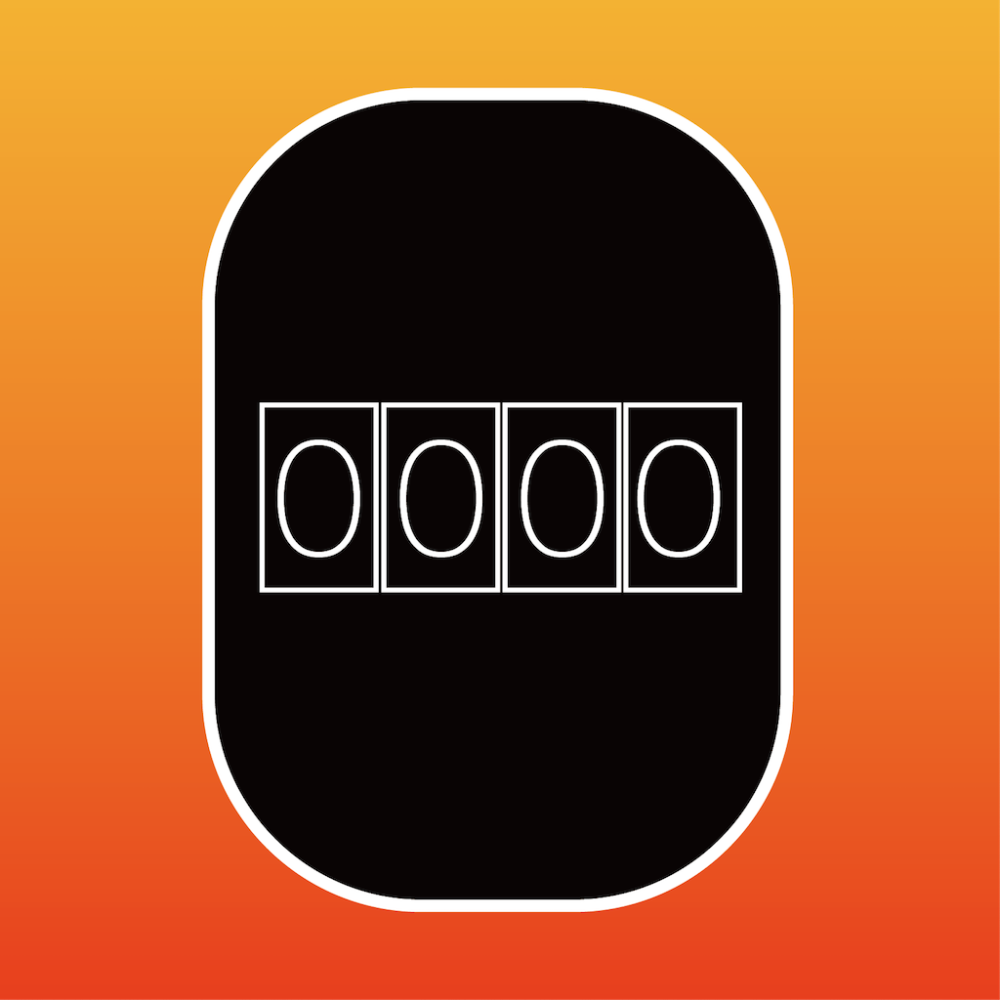

カウンター
学生時代にカウントアプリのアイコンに用いた画像です。Illustratorで作成しました。
オリジナルロゴ
漫画やアニメに出てきそうなものをイメージして作ったオリジナルロゴです。こちらもIllustratorで作成しました。
favicon素材

本サイトで使うために作成したfaviconです。みなゆの「み」をモチーフに、Illustratorで作成しました。
学生時代にカウントアプリのアイコンに用いた画像です。Illustratorで作成しました。
漫画やアニメに出てきそうなものをイメージして作ったオリジナルロゴです。こちらもIllustratorで作成しました。
本サイトで使うために作成したfaviconです。みなゆの「み」をモチーフに、Illustratorで作成しました。